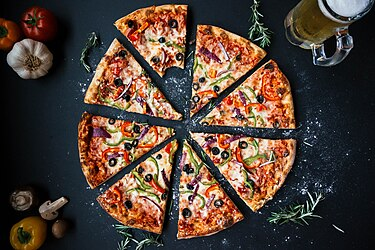

Welcome all to this website
Food
Food is any substance consumed by an organism for nutritional support. Food is usually of plant, animal, or fungal
origin and contains essential nutrients such as carbohydrates, fats, proteins, vitamins, or minerals.
Pizza

Pizza is an Italian dish typically consisting of a flat base of leavened wheat-based dough topped with tomato,
cheese, and other ingredients, baked at a high temperature, traditionally in a wood-fired oven.
Pizza
.jpg) Pizza and its variants are among the most popular foods in the world. Pizza is sold at a variety of restaurants,
including pizzerias (pizza specialty restaurants), Mediterranean restaurants, via delivery, and as street food. In
Italy, pizza served in a restaurant is presented unsliced, and is eaten with the use of a knife and fork. In
casual settings, however, it is typically cut into slices to be eaten while held in the hand. Pizza is also sold in
grocery stores in a variety of forms, including frozen or as kits for self-assembly. Store-bought pizzas are then cooked
using a home oven.
Pizza and its variants are among the most popular foods in the world. Pizza is sold at a variety of restaurants,
including pizzerias (pizza specialty restaurants), Mediterranean restaurants, via delivery, and as street food. In
Italy, pizza served in a restaurant is presented unsliced, and is eaten with the use of a knife and fork. In
casual settings, however, it is typically cut into slices to be eaten while held in the hand. Pizza is also sold in
grocery stores in a variety of forms, including frozen or as kits for self-assembly. Store-bought pizzas are then cooked
using a home oven.